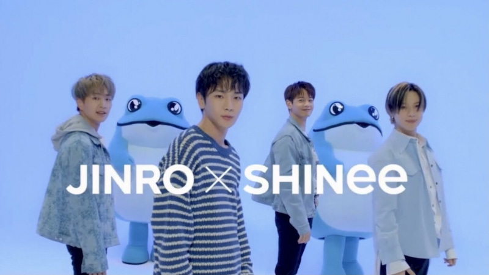

Korean Pop Kings SHINee has come back
after a year with their new single "Don't Call Me" Recently, they have a
collaboration with JINRO, a korean Soju brand releaseing cute merchandise like
shot glasses and soju with their trademark color Aqua Turqouise.

Jinro is a Soju Company based in Seoul,South Korea founded in 1924.
It's known for their brand name Chamisul which is the world most popular liquor.
Memorable SHINee member Kim Jonghyun dream was to have a collaboration with a Liquor company
and why not a better chance to do one with
Jinro! Merchandise will be releasing exclusively for Shawols(shinee fanbase)
next week.
STAY TUNED!